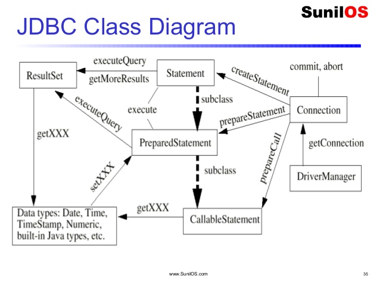

Para operar con una base de datos, ejecutando las consultas necesarias, nuestra aplicación deberá:

1.- Cargamos el driver correspondiente al SGBD que vayamos a utilizar (explicado en capítulos anteriores)
2.- Establecemos una conexión con la base de datos (explicado en el capítulo7) .
Creamos un objeto Connection utilizando el método getConnection() de la clase DriverManager. Este método recibe como parámetro la URL JDBC que identifica a la base de datos con la que queremos realizar la conexión.
conexion = DriverManager.getConnection("jdbc:mysql://localhost/ejemplo", "root", "system");
3.- Creamos el objeto Statement (o PrepareStatement): Para ello utilizamos el método createStatement() del objeto Connection. Esto nos permitirá ejecutar sentencias SQL en la base de datos.
sentencia = conexion.createStatement();
4.- Para ejecutar la sentencia SQL, usamos el método exacuteQuery("sql") del objeto Statement que producira el objeto ResultSet
sql = "SELECT * FROM dept";
resul = sentencia.executeQuery(sql);
5.- A continuación procesar el resultado, dependiendo de la sentencia puede ser un conjunto de filas (un ResultSet) o un entero correspondiente al numero de filas afectadas por la sentencia DML.
while (resul.next()) {
System.out.printf("%d, %s, %s %n", resul.getInt(1), resul.getString(2), resul.getString(3));
}
Las interfaces relacionadas son:
close (de la clase Connection) siempre que vayan a dejar de ser utilizadas , en lugar de esperar a que el garbage collector de Java las elimine.
También conviene cerrar la ejecución de procedimientos almacenados ( CallableStatement ), las consultas (Statement y PreparedStatement) y los resultados (ResultSet) para liberar los recursos.
Es recomendable liberar recursos en la parte Finally del try_catch , para asegurarnos que aunque se produzca cualquier error, se liberen los recursos utilizados por nuestro programa.
Gestión de errores.
Se puede producir un error tanto en el controlador como en la base de datos. Se lanza una excepción y laa ejecución del programa actual se detiene y el control se redirige a la cláusula de captura (catch) más cercana. Si no existe, la ejecución del programa finaliza.
El manejo de excepciones de JDBC es muy similar al manejo de excepciones de Java, pero para JDBC, la excepción más común con la que tratará es java.sql.SQLException. Es obligatorio capturar esta excepción.
Cuando se produce un error, el objeto SQLException pasado, tiene los siguientes métodos disponibles para recuperar información adicional sobre el error :
ejemplo:
package EmpleDepart;
import java.sql.*;
public class PrimeraConsulta {
public static void main(String[] args) {
Statement sentencia=null;
String sql=null;
ResultSet resul=null; // ResultSet es una estructura de datos de tipo cursor que modela una tabla en memoria que se puede recorrer
Connection conexion=null;
try {
// 2 Establecemos la conexion con la BD
conexion = DriverManager.getConnection("jdbc:mysql://localhost/ejemplo", "root", "system");
// 3 creamos el objeto Statement
sentencia = conexion.createStatement();
sql = "SELECT * FROM dept";
resul = sentencia.executeQuery(sql);// ejecutamos la consulta
// Recorremos el resultado para visualizar cada fila
// Se hace un bucle mientras haya registros y se van visualizando
while (resul.next()) {
System.out.printf("%d, %s, %s %n", resul.getInt(1), resul.getString(2), resul.getString(3));
}
} catch (SQLException cn) {// 5 gestionamos de errores
cn.printStackTrace();
} finally {// 4 liberamos recursos
try {
if (resul != null) { // liberar los ResultSet
resul.close();
}
if (sentencia != null) { // liberar los Statement
sentencia.close();
}
if (conexion != null) { // liberar la conexión a la BD
conexion.close();
}
} catch (Exception e) {
e.printStackTrace();
}
}
}
}